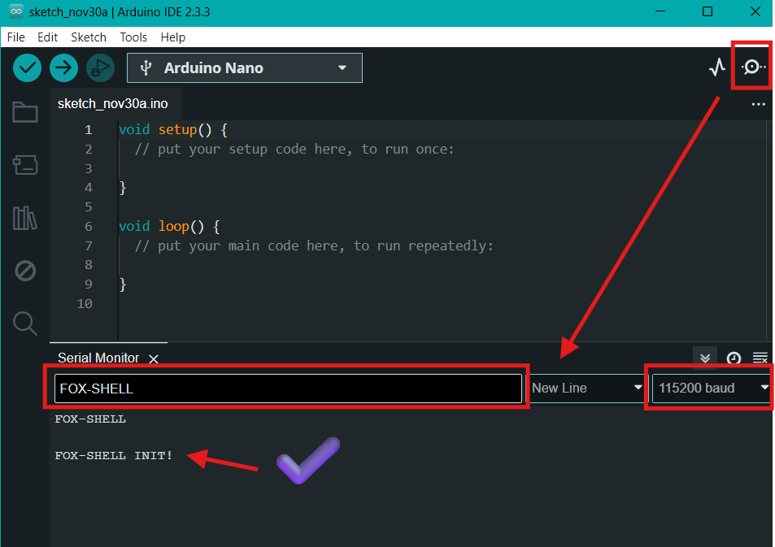
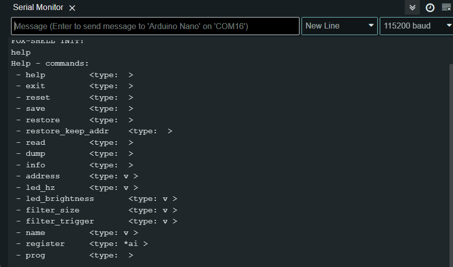
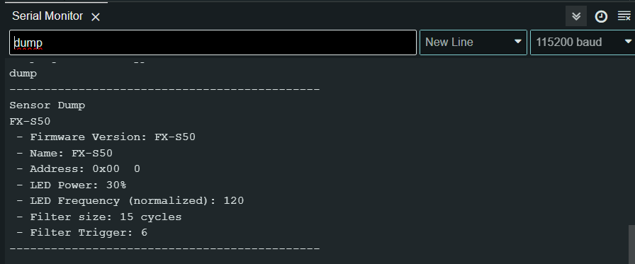
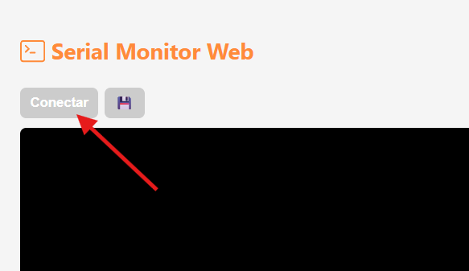
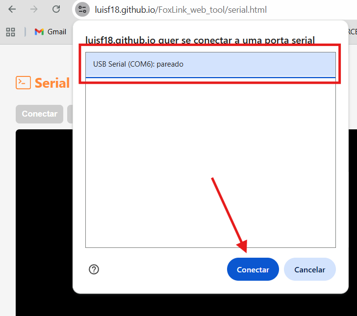
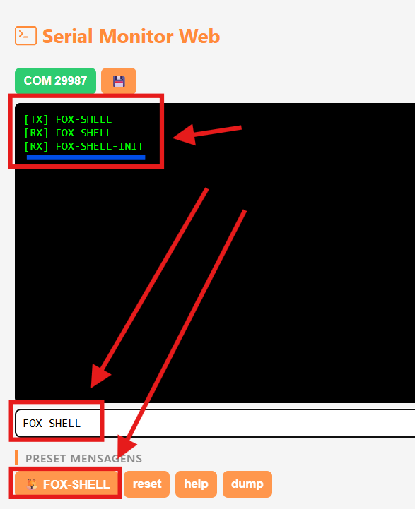

Shell
O modo Shell permite realizar leituras e configurações através de comandos de texto. Ele pode ser utilizado em qualquer aplicativo de comunicação serial, como:
- Arduino IDE (Serial Monitor)
- Putty
- Fox Serial
🔌 Conexão
Para conectar um dispositivo ao computador, é necessário utilizar um FoxLink. Veja mais detalhes em: FoxLink
Iniciando e utilizando o modo Shell
-
Conecte o dispositivo ao computador usando um FoxLink
-
Abra um software de comunicação serial (Arduino IDE, Putty ou Fox Serial)
-
Selecione a porta COM do FoxLink
-
Configure:
-
Baudrate: 115200
-
Final de linha: NL + CR
-
Envie o comando:
FOX-SHELL
O dispositivo deve responder com:
FOX-SHELL-INIT!
-
Após a inicialização, utilize:
-
help— para listar os comandos disponíveis -
dump— para visualizar as configurações atuais -
⚠️ Antes de sair, salve as alterações:
save
- Finalize o modo Shell com:
exit
Comandos
A lista de comandos varia de acordo com cada dispositivo, mas todos possuem os comandos básicos abaixo:
FOX-SHELL— inicia o modo Shellhelp— lista os comandos disponíveisexit— encerra o shelldump— exibe as principais configuraçõesreset— reinicia o dispositivouuid— lê o identificador únicosave— salva as alterações realizadasaddress— lê ou altera o endereço FoxWireregister— lê ou escreve um registrador de 8 bitsvcc— mede a tensão internarestore— restaura configurações de fábricarestore_keep_addr— restaura sem alterar o endereço
Inicialização condicional (Redes com multiplos dispositivos)
Em redes com múltiplos dispositivos, é necessário especificar com qual dispositivo deseja se comunicar.
Por padrão, o comando:
FOX-SHELL
inicia todos os dispositivos na linha. Isso só é seguro quando há apenas um dispositivo conectado — caso contrário, podem ocorrer conflitos de comunicação.
Para resolver isso, utilize os modos de inicialização condicional:
FOX-SHELL— inicia todos os dispositivos (usar apenas com um dispositivo)FOX-SHELL-<ADDR>— inicia um dispositivo específico pelo endereçoFOX-SHELL-IF— inicia apenas o dispositivo que atende a uma condição específicaFOX-SHELL-UNLOCK— desbloqueia os dispositivos para permitir nova comunicação
⚠️ Importante
- O modo Shell permite comunicação com um dispositivo por vez.
- Em redes com múltiplos dispositivos, utilize sempre a inicialização condicional para evitar conflitos.
- Para configurar vários dispositivos simultaneamente, utilize o FoxLink WebTool.
Exemplo
FOX-SHELL-0
<comandos>
exit
FOX-SHELL-UNLOCK
FOX-SHELL-1
<comandos>
exit
Shell com Arduino IDE




Shell com Fox Serial
1. Acesse: https://luisf18.github.io/FoxLink_web_tool/serial.html
2. Clique em conectar

3. Escolha a serial do FoxLink

4. Clique em FOX-SHELL ou digite o comando manualmente
